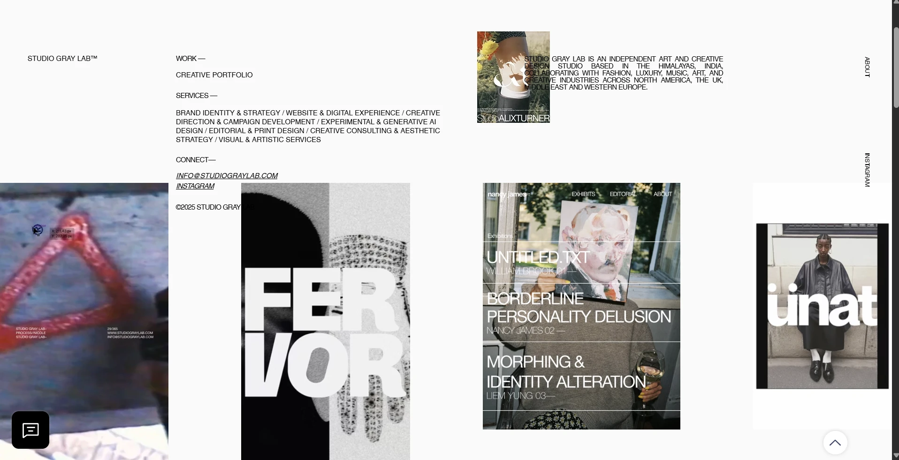
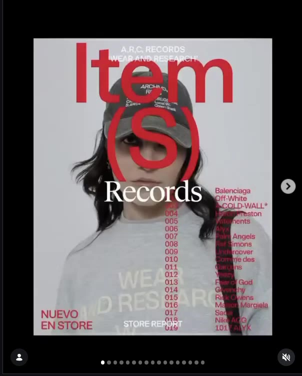
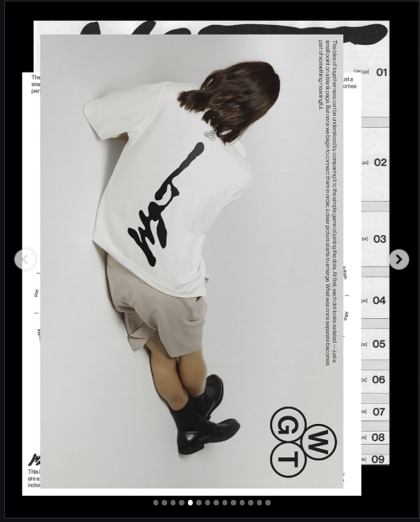
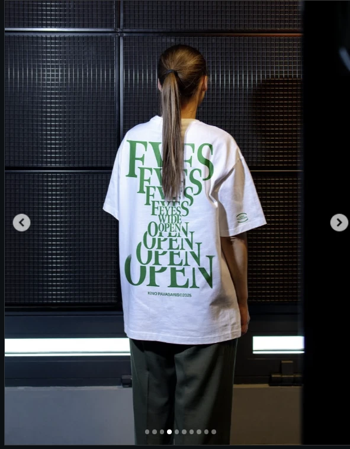
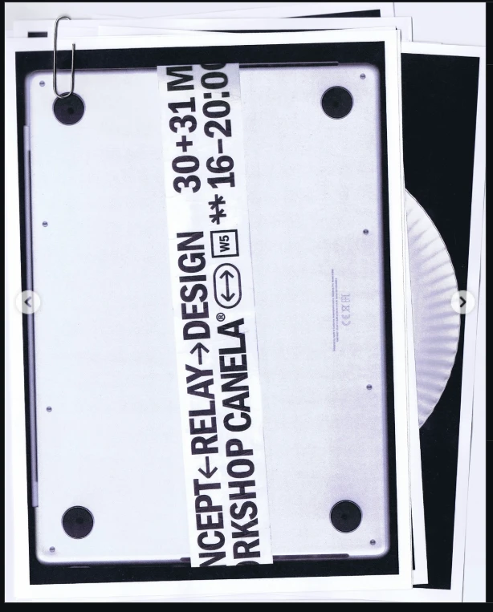

Serious Play™
Website concept
A moodboard built from the 14 references chosen by the client: Instagram posts, reels and the Studio Gray Lab landing page. Each one is annotated with what we take from it.
The references are fashion and editorial, never playful in the toy sense. Play shows up as system: type bent along rings, logos pixelated and stretched, work handled like paper in a binder.
Ground: paper, bone, concrete, ink.
One colour at a time.
Type as material.
Research worn as style: item numbers, sizes, years, timecodes.
Fourteen references, numbered in the order we received them. Reels play silently.





Neutrals do the work. Colour arrives one at a time, like a label on skin.
Rule: one accent per screen. Green (R02) or red (R05) can replace cobalt for a single campaign or case study. They never appear together.
Three voices: a condensed grotesk that shouts, a serif that speaks, a mono that files.
Set huge, cropped at the edge and laid over images (R08, R13). Uppercase only. For section titles and one word per screen.
The overlaid “Records” of R05 and the repeated serif of R02. For statements, project names and quotes.
Item numbers, timecodes, sizes and years (R05, R12, R07). The studio's research, worn as detail.
Body copy and navigation use Archivo at normal width, small and uppercase, the way Studio Gray Lab sets its menu.
What the references agree on, written as rules for the site.
Every project gets an article number, a year and a size. The portfolio is a record the studio keeps adding to.
Show work as objects: pages that turn, cards with tabs, scans with tape. Nothing floats in a void.
Motion follows rules: rings, grids, repetitions. It is precise and slow. It never bounces.
Words are stretched, repeated, pixelated and wrapped, while staying readable where it counts.
People seen from behind or cropped close. Objects lit hard with flash or soft on grey. No stock smiles.
Navigation and captions stay tiny and uppercase. Images and one headline take the space.
Rings run through the references: the circular type (R03), the Circa orbit (R12), the orb (R10). We propose one signature interaction built on it.
The homepage opens on the studio's archive arranged as a slow ring of work. Scroll or drag turns it; the piece at the top opens into its case study. It is calm enough for a luxury audience, and still something people want to play with. This sketch uses the references themselves as the ring.
How the references reshape the three directions in the rulebook. The rulebook itself stays as it is.
The archive idea is right. Swap the graph paper and highlighter for paper, bone and concrete; add article numbers and store-report layouts from R05.
Its dark, flash-lit mood matches R07, R11 and R13. Add the Gray Lab small-caps navigation and let the serif carry the names.
The toy colours and rounded blocks do not belong here. Replace it with The Ring: the archive as a slowly orbiting ring of work, from R03, R10 and R12.